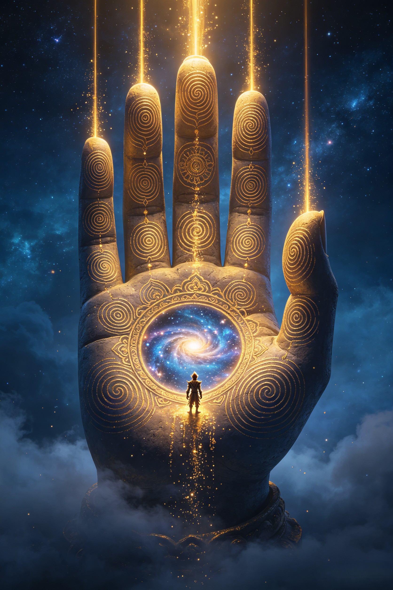

The Confrontation
No weapons. No armies. No violence. The universe's quietest battle — a single palm opened, and the most powerful rebel in existence learned that he had never left home.
Sun Wukong had done the impossible. He had shattered the celestial army, defeated every general, survived Laozi's furnace, and was now rampaging through the Imperial Palace itself — demanding the Jade Emperor's throne. The Jade Emperor, from his shattered hall, sent a desperate message to the Western Paradise. Only one being in the cosmos could handle what Sun Wukong had become. The Buddha did not hurry. He did not muster an army. He simply rose from his lotus seat and travelled east — unhurried, unafraid, entirely certain of the outcome.
When the Buddha arrived, he did not attack. He looked at the raging Monkey King with something like affection. He knew everything Sun Wukong had been through — the exclusion from the banquet, the empty title, the furnace, the 500-year mountain that was yet to come. He offered Sun Wukong a simple wager: "If you can somersault out of my palm, I will give you the Jade Emperor's throne. If you cannot, you will wait for your true purpose." Sun Wukong laughed. One somersault could carry him 108,000 li — farther than any distance in the known cosmos. He accepted.
Sun Wukong launched himself into the air, shrinking to a beam of light. He somersaulted past stars, past galaxies, past the edges of known reality. He flew for what felt like eons. Finally, he arrived at five immense pillars, rising from primordial mist — the pillars that held up the edge of existence itself. "This must be the end of heaven," he thought. To prove he had been there, he wrote a single line on the middle pillar with his own urine: "The Great Sage Equal to Heaven was here." Then he somersaulted back, triumphant, and landed in the Buddha's palm. "Give me the throne," he declared.
The Buddha did not argue. He simply opened his hand. There, on his middle finger, were the words Sun Wukong had written — still wet, still reeking of urine. The five pillars at the edge of the universe were the Buddha's fingers. The infinite distance Sun Wukong had crossed was the length of the Buddha's palm. The Monkey King stared, disbelieving. He had been inside the Buddha's hand the entire time. Every leap, every somersault, every moment of apparent escape — all of it had happened within the awareness of the Enlightened One. Sun Wukong tried to jump again, but the Buddha's hand closed — gently, inevitably — and became a mountain of five elements, pressing the Monkey King down to the mortal world to wait for the one monk who could set him free.
The mountain was not punishment. The Buddha could have destroyed Sun Wukong — erased him from existence. Instead, he preserved him. He knew that the Tang Monk would need a protector. He knew that the Monkey King's rebellion was not evil — it was misdirected power, waiting for the right purpose. Five hundred years under Five Elements Mountain was not a sentence. It was a gestation. When the Tang Monk finally removed the golden seal and Sun Wukong burst from the mountain, he was no longer a rebel. He was a pilgrim. The Buddha had not just stopped Sun Wukong — he had redirected his entire destiny. That is the nature of the Buddha's power. He does not destroy. He transforms.